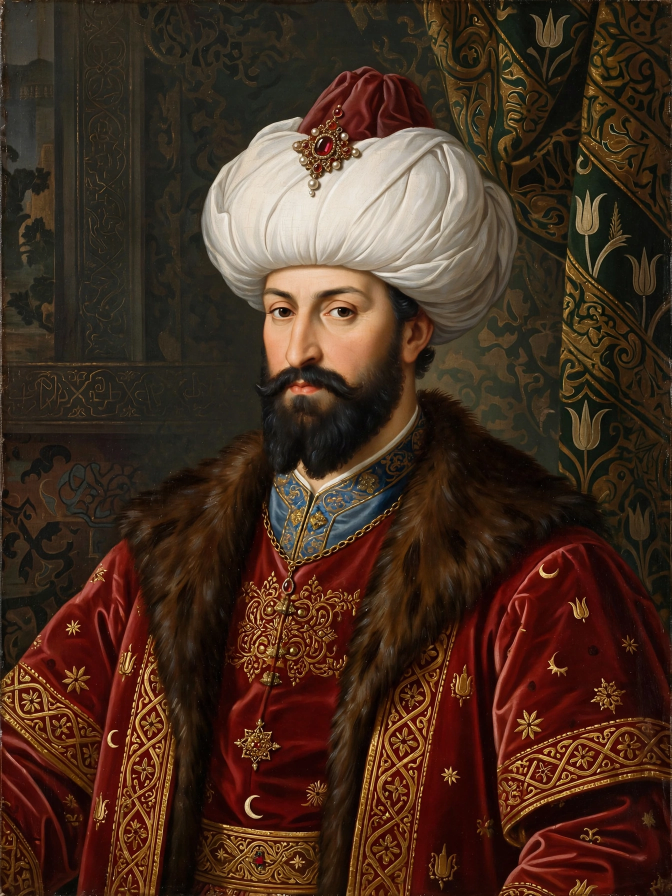

Mehmed I (c. 1381 – 26 May 1421), also known as Mehmed Çelebi, was the sultan of the Ottoman Empire from 1413 to 1421. He is credited with reunifying the empire after the Ottoman Interregnum.

| Mehmed I | |
|---|---|
| Reign | 5 July 1413 – 26 May 1421 |
| Predecessor | Bayezid I (as sultan) |
| Successor | Murad II |
| Born | c. 1381, Bursa |
| Died | 26 May 1421, Edirne |
| Father | Bayezid I |
After his father Bayezid I was defeated by Timur at the Battle of Ankara in 1402, the empire was divided among Bayezid's sons. Mehmed, based in Anatolia, gradually defeated his brothers Süleyman, İsa, and Musa, with support from Byzantine emperor Manuel II Palaiologos.
Mehmed restored central authority, suppressed the revolt of Sheikh Bedreddin, campaigned in Anatolia and the Balkans, and rebuilt Bursa. He is buried in the Green Tomb (Yeşil Türbe) in Bursa, part of the Green Mosque complex he commissioned.
Historians regard him as the second founder of the Ottoman Empire. His son Murad II succeeded him.